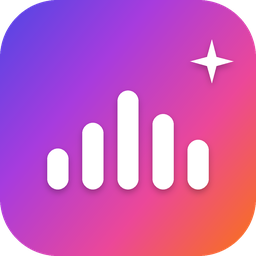
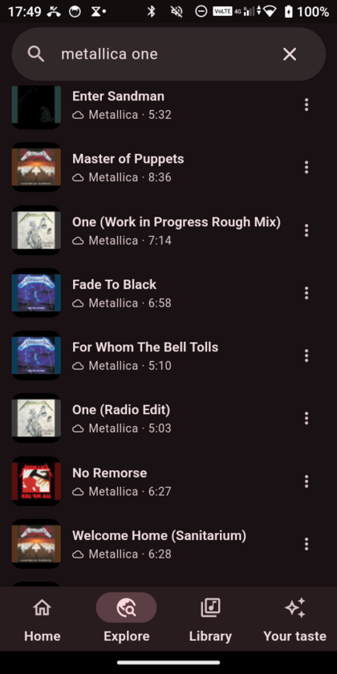
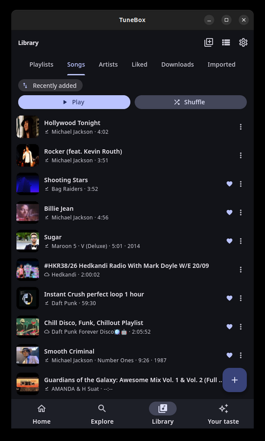

New
0.9.1 · 24 Oct 2026
0.9.1 · 24 Oct 2026
Small fixes
- Adding a song to a playlist now says so, instead of closing without a word.
- A video YouTube refuses for good (age-restricted, private, removed) is no longer retried on every launch.

TuneBoxStream from YouTube, play your own files, download for offline. Swipe through songs to teach it what you like — all the learning happens on your phone. No account, no ads, no tracking.
Without the account, the subscription or the company reading over your shoulder.
Plays, skips, likes and a swipe-to-rate training round teach an on-device model. See exactly what it thinks of you — and change its mind.
Search and stream YouTube Music, or point TuneBox at a folder. Background playback, queue, shuffle by taste, radio when the queue ends.
Hit the heart and the song is saved. Wi-Fi-only, a storage budget and a data saver keep it from eating your plan.
Each listener gets their own library, likes and taste. Switch with one tap — no accounts involved.
Including right-to-left ones, with a searchable language picker. Text size, high contrast and Reduce motion are built in.
Send it to another device over Wi-Fi with a code, or via a file or plain text. Merging twice never doubles anything.
Home shelves built from your listening, search that answers as you type, and a page that shows what the AI learned.


What changed lately. Every update installs over the old one and keeps your library and taste.
A searchable language picker, an iOS-style feel (turn it off with Reduce motion), instant search, and a lighter footprint on phones with little memory.
Every listener gets their own library and taste. The training round opens faster, songs stream without skipping, and moving your taste to another device is safe to repeat.
Latest version: …. Free, forever, MIT licensed. downloads so far, counted by GitHub — no tracking.
Android 7 or newer. One universal APK.
Download APK Open it on the phone and allow installing from that app once. Signed with a real release key; after that the app updates itself.x86_64. Installs into your home folder, no root.
Download .tar.gz Extract, run./install.sh. Needs libmpv (sudo apt install libmpv2).iOS 15+. Unsigned build you sign with your own Apple ID.
Download .ipa Install with SideStore or AltStore; a free Apple ID needs a refresh every 7 days (they do it for you).Android's Play Protect warns about any app it hasn't seen before — that is "unknown", not "malicious". The app asks for very little: internet, notifications, playback service and (only if you import music) audio files. No contacts, location, camera or SMS. The code is public on GitHub.
TuneBox is an independent, unofficial project and is not affiliated with or endorsed by YouTube or Google. It is a personal-use player; please respect the terms of the services you use.
No. It is free and open source under the MIT licence, with no ads, no accounts and no analytics.
Open an issue on GitHub. Say which device and version (Settings → About) and what you tapped.